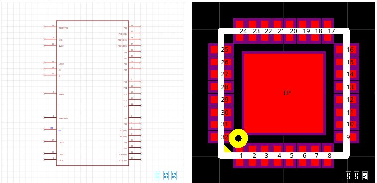
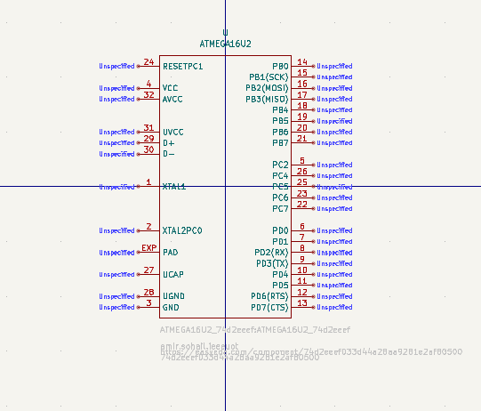
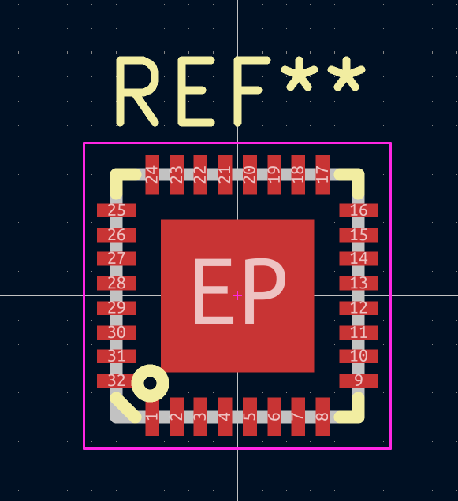

An EasyEDA link.
A KiCad library.
Paste a public component link. Get a symbol and footprint, converted on your own computer.
Available on PyPI: python -m pip install euc2k
No account. No search. No cloud conversion.
Example: euc2k followed by a public EasyEDA component link.
The example fetches the component, converts the symbol and footprint, preserves credits, and prints two library paths to add in KiCad. Actual file names depend on the component.
For the part with a link.
And no LCSC number.
Some of the most useful EasyEDA components are contributed by users. When there’s no LCSC part number, euc2k starts with what you have: the component link.
- 01
Paste a link
A public EasyEDA Standard component URL or its 32-character UUID. No export needed.
- 02
Fetch politely
One public JSON request at a time. A 4 s cooldown + 0–2 s jitter. Stops after two consecutive 403/429 responses.
- 03
Convert locally
Pins, pads, arcs, polygons, slots, multi-unit symbols and layers. Add
--validateto check temporary copies with KiCad’s CLI. - 04
Add to KiCad
Get the two library paths, plus a
CREDITS.txtpreserving authors and license text. Your files stay local.
Install with pip.
Paste a link.
You’ll need Python 3.11+. Install from PyPI in a virtual environment. No Git or repository download is needed.
py -3 -m venv .venv
.venv\Scripts\activate
python -m pip install euc2k
euc2k https://easyeda.com/component/7db93ef938c54a728e02f6579db05977python3 -m venv .venv
source .venv/bin/activate
python -m pip install euc2k
euc2k https://easyeda.com/component/7db93ef938c54a728e02f6579db05977Replace the example link with yours. In a new terminal, activate the same environment before using euc2k again. On Windows, enable “Add Python to PATH” when installing Python. On Debian/Ubuntu, you may also need python3-venv.
Prefer a checkout? Follow the clone instructions and use run <link> on Windows or ./run.sh <link> on Linux/macOS. For an isolated global install, use pipx install euc2k or uv tool install euc2k.
To update, run python -m pip install --upgrade euc2k in the activated environment. euc2k --version shows your version. See euc2k 1.4.1 on PyPI and the release notes.
Optional validation: use euc2k <link> --validate. Requires KiCad 8/9/10 with kicad-cli on PATH. Checks run on temporary copies; failure keeps existing libraries.
In KiCad: Preferences → Manage Symbol Libraries → add the printed .kicad_sym path. Then Manage Footprint Libraries → add the .pretty folder.
From EasyEDA to KiCad.
ATMEGA16U2: the source drawing and the converted libraries, shown in their editors.
View the source component





Screenshots supplied by the maintainer. Open an image to see the original at full size. Source component rights remain with its author.
Different starting points.
Room for all three.
euc2k fills a small gap. An LCSC part number or an exported project may call for a different tool.
| Your starting point | euc2k.pyThe component-link route | easyeda2kicad.py by uPesy | KiCad built-in EasyEDA / JLCEDA import · v10 |
|---|---|---|---|
| Identify a component | Public Standard link or UUID | LCSC part numbere.g. C2040 | Exported file, library or project |
| Symbol & footprint | ✓ KiCad 8 / 9 / 10 | ✓ KiCad 6+ | ✓ Import or migrate exported data |
| 3D models | 2D only, by design | ✓ WRL + STEP models | 3D references supported¹ Model retrieval unverified |
| Export a file first? | No | No | Yes |
| KiCad required to convert? | No · optional CLI check | No · standalone Python tool | Yes · editor or KiCad CLI |
| Command-line use | ✓ Standalone | ✓ Standalone | ✓ kicad-cli library upgrade² |
| Software license | MIT | AGPL-3.0 | GPL-3.0-or-later³ |
| Best at | User-contributed parts that only have a link | A mature LCSC workflow, with 3D models | Moving exported designs; no extra tool to install |
Swipe the table to compare all three tools →
Checked against official sources on . euc2k facts are supplied by its maintainer. Other tools were reviewed in documentation, not run here.
Sources & comparison notes +
uPesy: official README and license. The documented CLI uses LCSC IDs; direct component-link input is unverified.
KiCad 10: Schematic Editor, PCB Editor, and CLI reference. ¹ Developer docs describe 3D model references; automatic model-file retrieval across Standard/Pro is unverified. ² KiCad 10 documents sym upgrade and fp upgrade for exported EasyEDA libraries, without a running GUI. ³ Most KiCad source is GPL-3.0-or-later; some files have other licenses.
Software licenses do not replace the individual component authors’ licenses.
Start with euc2k.
Try uPesy’s easyeda2kicad.
Use KiCad’s native importer.
Built with AI.
Finished by a human.
Most of the code was written by AI assistants: Codex for code, Claude for planning, prompts and code review.
The human work was substantial: choosing what to build, capturing real EasyEDA data, and testing about 15 real components in KiCad. AI wrote code. A person checked what it actually did.
- 01IdeaA missing link
- 02PromptDefine the job
- 03First versionAI-written code
- 04Real-part testingHuman, in KiCad
- 05FixesReport, repair, repeat
- 06Releasev1.4.1
↳Catching a multi-unit symbol that exported only its first unit.
↳Reporting pads with unexpected plating flags.
↳Comparing screenshots with originals, then polishing the README and naming.
A small tool.
A clear scope.
Safe file writes and clear errors help. You should still review every converted component before using it on a board.
Not affiliated with EasyEDA, JLC or LCSC. The unofficial public endpoint can change or stop working.
Symbols and footprints for KiCad 8/9/10. No 3D models, search or bulk download, on purpose.
Contributed components keep their authors’ rights. Check each license before redistributing; the tool’s MIT license does not relicense a part.
Good questions.
Do I need an EasyEDA account?+
No. euc2k fetches a public EasyEDA Standard component by its link or UUID. Private components are outside its scope.
Does “local” mean offline?+
No. A connection to easyeda.com is needed to fetch the public JSON. Conversion and file writes happen on your computer; there is no cloud conversion service.
Does it support EasyEDA Pro or 3D models?+
No. It is for public EasyEDA Standard components and 2D KiCad symbols and footprints. For LCSC parts with 3D models, look at uPesy’s easyeda2kicad.py. For exported projects, try KiCad’s importer.
Does KiCad need to be running?+
No. euc2k is a standalone command-line tool. KiCad validation is opt-in: pass --validate and make sure kicad-cli is on PATH. Installing KiCad alone does not enable validation. With that flag, a missing CLI or failed check returns an error and keeps previous output files. Open KiCad afterward and add the two printed library paths.
What happens if EasyEDA blocks a request?+
Requests run one at a time with a default 4-second cooldown plus 0–2 seconds of jitter. After two consecutive 403 or 429 responses, euc2k stops instead of continuing to request parts.
Can I redistribute the converted components?+
Check the source component’s license first. The generated CREDITS.txt preserves author and license information. euc2k’s MIT license covers the tool, not other people’s component rights.
A link is enough to begin.
Your next component, in your own library.
Get started